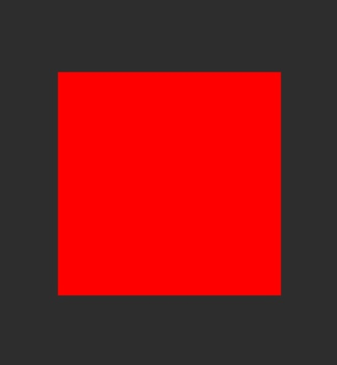

Qt 3D: Simple Custom Material QML Example
Demonstrates creating a custom material in Qt 3D.

This example demonstrates creating a simple custom material.
Running the Example
To run the example from Qt Creator, open the Welcome mode and select the example from Examples. For more information, visit Building and Running an Example.
Specifying the Scene
The example uses Scene3D to render a scene which will use the custom material. The scene contains a plane model, which uses the custom material.
Entity { id: root components: [transform, mesh, material] SimpleMaterial { id: material maincolor: "red" } Transform { id: transform rotationX: 45 } PlaneMesh { id: mesh width: 1.0 height: 1.0 meshResolution: Qt.size(2, 2) } }
Specifying the Material
The material is specified in SimpleMaterial.qml using Material type. First the material specifies parameters, which are mapped to the corresponding uniforms in the shaders so that they can be changed from the qml.
property color maincolor: Qt.rgba(0.0, 0.0, 0.0, 1.0) parameters: [ Parameter { name: "maincolor" value: Qt.vector3d(root.maincolor.r, root.maincolor.g, root.maincolor.b) } ]
Next we specify which shaders are loaded. Separate versions of the shaders are provided for OpenGL ES 2 and OpenGL renderers.
property string vertex: "qrc:/shaders/gl3/simpleColor.vert" property string fragment: "qrc:/shaders/gl3/simpleColor.frag" property string vertexES: "qrc:/shaders/es2/simpleColor.vert" property string fragmentES: "qrc:/shaders/es2/simpleColor.frag"
In the vertex shader we simply transform the position by the transformation matrices.
void main()
{
// Transform position, normal, and tangent to world coords
worldPosition = vec3(modelMatrix * vec4(vertexPosition, 1.0));
// Calculate vertex position in clip coordinates
gl_Position = mvp * vec4(worldPosition, 1.0);
}
In the fragment shader we simply set the fragment color to be the maincolor specified in the material.
uniform vec3 maincolor;
void main()
{
//output color from material
fragColor = vec4(maincolor,1.0);
}
Next, we create ShaderPrograms from the shaders.
ShaderProgram { id: gl3Shader vertexShaderCode: loadSource(parent.vertex) fragmentShaderCode: loadSource(parent.fragment) } ShaderProgram { id: es2Shader vertexShaderCode: loadSource(parent.vertexES) fragmentShaderCode: loadSource(parent.fragmentES) }
Finally the shader programs are used in the Techniques corresponding to a specific Api profile.
// OpenGL 3.1 Technique { filterKeys: [forward] graphicsApiFilter { api: GraphicsApiFilter.OpenGL profile: GraphicsApiFilter.CoreProfile majorVersion: 3 minorVersion: 1 } renderPasses: RenderPass { shaderProgram: gl3Shader } },